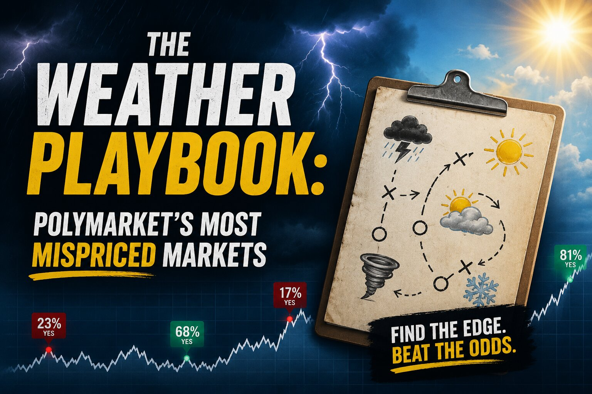

The Weather Playbook: Polymarket's Most Mispriced Markets

Most people scroll straight past the weather markets. A line that just says "NYC High 90°F — 34%" doesn't give you much to work with — it's a price with no story behind it. That's actually the reason these markets stay inefficient: they get priced by people looking at a bare number, not at the forecast that number is supposed to represent. If you're willing to actually look at the forecast — the curve, the live reading, how much the models disagree with each other — there's real, repeatable edge sitting here that doesn't exist in busier markets.
What follows is a three-part approach built specifically around temperature markets, using a single city as the example throughout. The logic carries over to any city the same way.
Strategy 1: Buy the cluster, not the bucket
A single temperature bucket — betting the high lands on exactly 90°F and nowhere else — is close to a coin flip you'll usually lose. But a forecast high is never a single number; it's a best guess with a margin of error, and that margin of error is fairly predictable for a given lead time. So instead of betting on one bucket, you buy a cluster of buckets stacked around the forecast peak — the five or seven adjacent temperatures on either side of it.
Here's the logic: if the forecast high is 90°F and same-day forecasts are typically accurate to within two or three degrees, the real high has a very good chance of landing somewhere in that narrow band. A tight cluster of five buckets around the peak often has real odds in the high 60s to low 70s percent of actually containing the outcome; a slightly wider cluster of seven can push into the 80s. If the combined cost of buying that whole cluster is meaningfully cheaper than its real odds of winning, you've got a position where one of your buckets is essentially guaranteed to pay out in full, and you've paid less for the set than it's statistically worth.
The detail that actually makes this profitable, rather than just a fair bet, is that forecast errors aren't random in both directions — they lean one way depending on the weather setup. Ahead of an incoming cold front, models tend to run a little warm, because the front (and the cooling that comes with it) typically arrives later than modeled — so it pays to nudge your cluster slightly upward. On a clear, calm summer afternoon, the opposite tends to happen, and shading your cluster down a degree or so is usually the better call. That small, deliberate shift is where most of the real edge in this strategy comes from — it's not enough to buy the "obvious" cluster centered exactly on the forecast number.
The risk here is straightforward: if the actual high falls outside your cluster, the whole basket is a loss, and while that's uncommon, a couple of misses in a row is well within normal variance. Treat any single cluster as one basket, not your whole bankroll, and size accordingly.
Strategy 2: Short the buckets that can't possibly win anymore
This one is less about forecasting and more about the market being slow to update. Once a day's actual high has already printed and the temperature is clearly falling toward evening, any bucket above that realized high is mathematically dead — there is no way for the day to get hotter again. If the book is still offering a few cents on those now-impossible buckets late in the day, that's close to a free short: you're selling something that cannot win against people still willing to pay for it.
Earlier in the day, before the peak has actually happened, you can't call a bucket "dead" quite so confidently — you need to build in a buffer for the forecast still being wrong. The buffer should get wider the further out you are: a same-day forecast needs a smaller cushion than one made a couple of days in advance, since more time means more room for the forecast to shift. Anything sitting comfortably above the forecast high plus that buffer is a reasonable short candidate.
The rule that keeps this strategy from quietly bleeding you is simple: only take the short if the market is paying you several times more than the real odds justify. These are small, high win-rate trades — you're usually risking most of your stake to win a few cents — so the trade only makes sense when the mispricing is large and obvious, and you're doing it across a wide spread of buckets rather than betting big on any single one. Watch for local quirks that can spike a reading unexpectedly, like downslope winds near mountains or a station sitting in a pocket of a city that runs hotter than its surroundings — those can undo a short that looked safe an hour earlier.
Strategy 3: Get ahead of the forecast, days before the crowd shows up
Markets for temperatures two or three days out tend to be thin and slow, because most traders wait until the shorter-range forecasts confirm before they bother trading. That lag is the opportunity: if the major weather models already agree on where a day is headed, you can take a position before the rest of the market catches up.
This only makes sense when the signal is genuinely strong — not on an ordinary day. The clearest setups are when the big global models are already converging on nearly the same number days in advance, when there's a clear weather system on the way (an incoming front, a heat dome, unusually warm or humid air moving in) that the models can see coming well before the market reacts to it, or heading into a seasonal extreme where the market is still anchored to the "normal" temperature for that time of year and hasn't adjusted for how far outside normal this particular stretch is shaping up to be.
In that kind of setup, the market is often still pricing around the seasonal average while the models are already pointing well above or below it — which means the buckets around where the models actually expect the day to land can be priced far below their real odds. As the shorter-range forecasts catch up and confirm the call over the following day or two, that mispricing tends to close, and you can hold to the market's resolution or exit early once the price has moved your way.
A smaller, quieter version of the same idea shows up in overnight low-temperature markets, which get far less attention than daily highs. On clear, calm nights, temperatures tend to drop more than models expect, and that tendency shows up reliably enough, a couple of days out, to be worth watching on its own.
Before putting on a trade this far out, it's worth checking three things: how much the different model runs actually agree with each other (tight agreement is a green light, a wide spread is a reason to stay out), how far apart the major global models are from one another, and how much error is typical for that season and that kind of location — coastal cities tend to be more predictable than inland ones, and summer forecasts are generally more reliable than winter ones at the same lead time. Keep these positions small relative to your bankroll, and be willing to walk away if the shorter-range forecast reverses hard against you as the date approaches — it happens often enough that it shouldn't come as a surprise.
Putting the three together
Each of these plays a different role, and that's what makes them work as a set rather than three competing ideas. The peak cluster is the steady base position — moderate odds, moderate payout, the one you're doing most often. The tail shorts are high win-rate but small individual payouts, meant to be spread thin across many contracts rather than concentrated. The far-dated convergence trades are the opposite — you'll be wrong more often, but the payout when you're right is large enough to justify the lower hit rate. Leaning more heavily on the base position, a smaller slice on the tail shorts, and a modest allocation to the convergence trades tends to keep the three from moving in the same direction at the same time, which is the point of holding all three instead of just one.
None of this replaces actually tracking your results. Keeping a simple log of what the forecast said, what you thought the fair price was, what the market was actually charging, and how it resolved will tell you, after enough trades, which of these three genuinely works for you and which ones you should drop.
Disclaimer: This post summarizes a trading approach shared publicly online and is for educational purposes only. It is not financial advice or a forecast of any specific weather event. Weather markets carry real risk, forecasts can and do fail, and past performance of any strategy does not guarantee future results. Only risk what you can afford to lose.